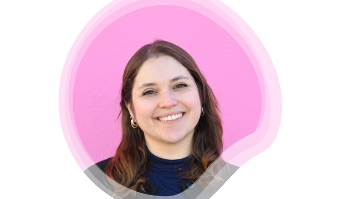

I'm Gabriela Balderrama-Gutierrez, PhD — a bioinformatics scientist at the crossroads of single-cell genomics, CAR-T cell therapy, ENCODE & MODEL-AD consortia, and AI-powered discovery. Based in Southern California.

PhD · Kite Pharma (Gilead) · SoCal
I've spent the last five years at the center of CAR-T cell therapy — building the computational tools to understand how these therapies work and translating complex multi-omics data into insights that matter for patients and clinical teams.
My career spans academic consortia (ENCODE, MODEL-AD), industry (Kite Pharma / Gilead), and volunteer initiatives (Rare Genomics Institute). I'm passionate about connecting science to strategy and championing responsible AI adoption in biomedical research.
From academic consortia to industry-leading cell therapy — building the computational bridge between biology and clinical impact.
Proud contributor to landmark consortia and cutting-edge cell therapy research, working at the interface of genomics, AI, and clinical translation.
Led bioinformatics analysis of long-read RNA-seq data, validated the long-read transcriptome pipeline, and presented at international ENCODE meetings in Barcelona, Seattle, and Asilomar, CA (Mortazavi Lab, UCI).
Bioinformatics Data Management Core member (2019–2021) for the multi-institution Alzheimer's mouse model consortium. Standardized single-cell protocols, set up analysis pipelines, and submitted datasets to SAGE Bionetworks.
3+ years of embedded bioinformatics in the CAR-T space — from single-cell genomics of CAR-T products to associating genomic features with clinical outcomes. Co-authored a 2026 Blood Advances study on ibrutinib + CAR-T in mantle cell lymphoma.
Internal champion for responsible AI at Kite Pharma — evaluating GenAI platforms, piloting agentic tools for genomic data extraction, and guiding lab teams in adopting AI to accelerate research workflows.
Multi-omics evaluation of Peromyscus leucopus. Contributed transcriptomic and metabolomic analysis revealing how this infection-tolerant mammal counters endotoxin-driven inflammation. Published in mBio.
Drug effects on microglia/astrocytes in Alzheimer's mouse models via scRNA-seq (Tenner Lab). Transcriptomic plasticity of metastatic breast cancer cells using spatially restricted metabolic labeling (Prescher/Spitale Labs).
10+ peer-reviewed works spanning CAR-T therapy, transcriptomics, long-read sequencing, and infectious disease. Full list on Google Scholar →
Whether you're interested in scientific collaboration, medical affairs opportunities, or discussing GenAI in biopharma — I'd love to connect.